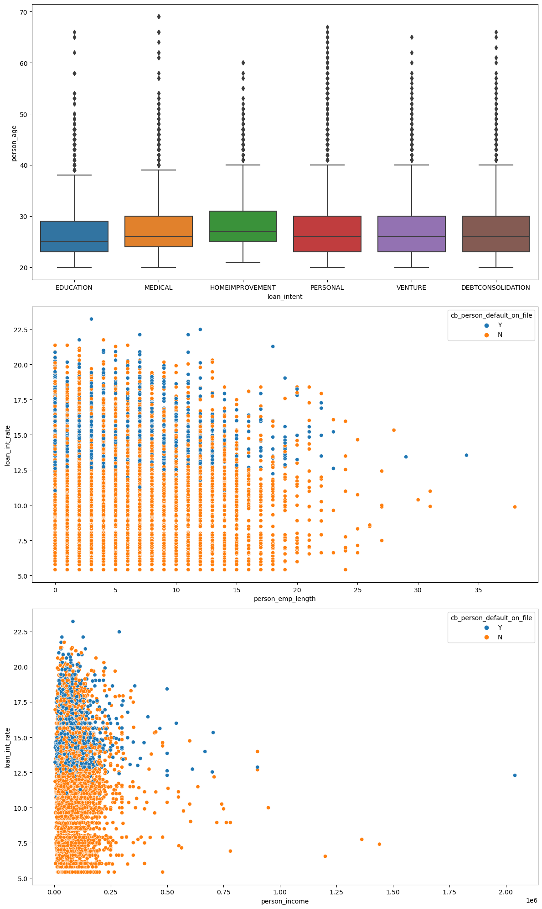
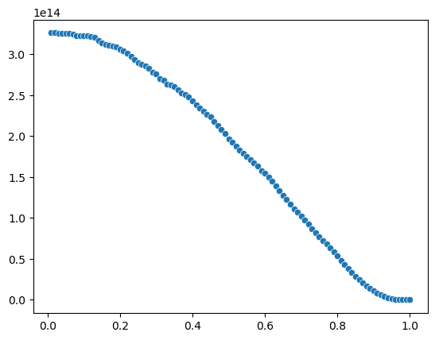

import pandas as pd
url = "https://raw.githubusercontent.com/PhilChodrow/ml-notes/main/data/credit-risk/train.csv"
df_train = pd.read_csv(url)PART A: Grab the Data
df_train.head(50)| person_age | person_income | person_home_ownership | person_emp_length | loan_intent | loan_grade | loan_amnt | loan_int_rate | loan_status | loan_percent_income | cb_person_default_on_file | cb_person_cred_hist_length | |
|---|---|---|---|---|---|---|---|---|---|---|---|---|
| 0 | 25 | 43200 | RENT | NaN | VENTURE | B | 1200 | 9.91 | 0 | 0.03 | N | 4 |
| 1 | 27 | 98000 | RENT | 3.0 | EDUCATION | C | 11750 | 13.47 | 0 | 0.12 | Y | 6 |
| 2 | 22 | 36996 | RENT | 5.0 | EDUCATION | A | 10000 | 7.51 | 0 | 0.27 | N | 4 |
| 3 | 24 | 26000 | RENT | 2.0 | MEDICAL | C | 1325 | 12.87 | 1 | 0.05 | N | 4 |
| 4 | 29 | 53004 | MORTGAGE | 2.0 | HOMEIMPROVEMENT | A | 15000 | 9.63 | 0 | 0.28 | N | 10 |
| 5 | 40 | 50000 | MORTGAGE | 1.0 | PERSONAL | B | 12000 | NaN | 0 | 0.24 | N | 17 |
| 6 | 21 | 21700 | RENT | 2.0 | HOMEIMPROVEMENT | D | 5500 | 14.91 | 1 | 0.25 | N | 2 |
| 7 | 39 | 43000 | MORTGAGE | 3.0 | HOMEIMPROVEMENT | A | 6250 | 7.68 | 0 | 0.15 | N | 14 |
| 8 | 36 | 59004 | MORTGAGE | 11.0 | VENTURE | A | 10000 | 7.51 | 0 | 0.17 | N | 15 |
| 9 | 22 | 34500 | RENT | 2.0 | MEDICAL | D | 5000 | 16.89 | 1 | 0.14 | N | 3 |
| 10 | 22 | 33640 | MORTGAGE | 4.0 | VENTURE | B | 12000 | 10.65 | 0 | 0.36 | N | 3 |
| 11 | 28 | 44000 | RENT | 5.0 | PERSONAL | C | 16000 | 13.48 | 1 | 0.36 | N | 5 |
| 12 | 32 | 44500 | OWN | 3.0 | HOMEIMPROVEMENT | A | 15000 | 7.51 | 0 | 0.34 | N | 5 |
| 13 | 23 | 168600 | RENT | 3.0 | MEDICAL | B | 20000 | 11.58 | 0 | 0.12 | N | 4 |
| 14 | 27 | 62000 | RENT | 2.0 | PERSONAL | B | 9600 | 10.25 | 1 | 0.15 | N | 8 |
| 15 | 27 | 54000 | RENT | 2.0 | MEDICAL | B | 20000 | 10.99 | 1 | 0.37 | N | 8 |
| 16 | 26 | 88500 | MORTGAGE | 10.0 | EDUCATION | A | 10000 | 8.59 | 0 | 0.11 | N | 4 |
| 17 | 40 | 66000 | OWN | 25.0 | MEDICAL | C | 6125 | 14.65 | 0 | 0.09 | Y | 17 |
| 18 | 34 | 62000 | RENT | 5.0 | VENTURE | B | 12000 | 10.99 | 0 | 0.19 | N | 6 |
| 19 | 31 | 100000 | MORTGAGE | 0.0 | HOMEIMPROVEMENT | A | 15000 | 9.63 | 0 | 0.15 | N | 5 |
| 20 | 23 | 25000 | MORTGAGE | 0.0 | PERSONAL | C | 4750 | 13.57 | 0 | 0.19 | N | 2 |
| 21 | 23 | 65000 | MORTGAGE | 0.0 | VENTURE | B | 7300 | 9.99 | 0 | 0.11 | N | 3 |
| 22 | 37 | 85000 | RENT | 3.0 | EDUCATION | C | 10000 | 14.27 | 0 | 0.12 | N | 14 |
| 23 | 22 | 40000 | OWN | 5.0 | MEDICAL | B | 6000 | 9.25 | 0 | 0.15 | N | 3 |
| 24 | 26 | 65000 | MORTGAGE | 5.0 | DEBTCONSOLIDATION | A | 5000 | 5.42 | 0 | 0.08 | N | 4 |
| 25 | 32 | 19000 | RENT | 1.0 | PERSONAL | A | 8325 | 6.62 | 1 | 0.44 | N | 9 |
| 26 | 28 | 27050 | RENT | NaN | VENTURE | C | 8500 | 15.96 | 1 | 0.31 | Y | 10 |
| 27 | 22 | 53000 | RENT | 2.0 | EDUCATION | B | 6500 | 10.65 | 0 | 0.12 | N | 4 |
| 28 | 28 | 91000 | MORTGAGE | 6.0 | PERSONAL | B | 15000 | 9.88 | 0 | 0.16 | N | 9 |
| 29 | 27 | 33000 | MORTGAGE | 7.0 | VENTURE | B | 4800 | 10.65 | 0 | 0.15 | N | 10 |
| 30 | 23 | 85000 | MORTGAGE | 3.0 | EDUCATION | B | 15000 | 10.00 | 0 | 0.18 | N | 2 |
| 31 | 22 | 107000 | MORTGAGE | 1.0 | VENTURE | A | 10000 | 7.14 | 0 | 0.09 | N | 2 |
| 32 | 23 | 25000 | RENT | 2.0 | EDUCATION | A | 8500 | 6.03 | 1 | 0.34 | N | 3 |
| 33 | 28 | 110000 | MORTGAGE | 0.0 | VENTURE | E | 15000 | 16.32 | 0 | 0.14 | Y | 5 |
| 34 | 40 | 70000 | RENT | 2.0 | DEBTCONSOLIDATION | B | 16000 | 11.99 | 0 | 0.23 | N | 12 |
| 35 | 24 | 51000 | RENT | 8.0 | VENTURE | B | 20000 | 10.38 | 1 | 0.39 | N | 3 |
| 36 | 35 | 45000 | MORTGAGE | 16.0 | MEDICAL | C | 6500 | 13.98 | 0 | 0.14 | N | 10 |
| 37 | 30 | 40000 | RENT | 8.0 | VENTURE | A | 2500 | 5.79 | 0 | 0.06 | N | 8 |
| 38 | 26 | 100000 | RENT | 11.0 | PERSONAL | A | 14500 | 8.94 | 0 | 0.14 | N | 3 |
| 39 | 28 | 112200 | RENT | 11.0 | MEDICAL | C | 7000 | 11.66 | 0 | 0.06 | Y | 7 |
| 40 | 27 | 60000 | RENT | 1.0 | PERSONAL | C | 10000 | 13.22 | 0 | 0.17 | N | 7 |
| 41 | 24 | 41000 | RENT | 1.0 | DEBTCONSOLIDATION | C | 7000 | 12.53 | 0 | 0.17 | N | 2 |
| 42 | 21 | 20000 | RENT | 2.0 | MEDICAL | C | 2500 | 13.79 | 0 | 0.13 | Y | 4 |
| 43 | 27 | 51456 | OWN | 3.0 | PERSONAL | B | 8000 | 10.62 | 0 | 0.16 | N | 7 |
| 44 | 36 | 40800 | MORTGAGE | 7.0 | HOMEIMPROVEMENT | D | 7200 | 16.32 | 0 | 0.18 | Y | 11 |
| 45 | 24 | 62000 | RENT | 8.0 | PERSONAL | A | 8850 | 6.62 | 0 | 0.14 | N | 3 |
| 46 | 48 | 100000 | MORTGAGE | 3.0 | DEBTCONSOLIDATION | B | 15000 | 9.88 | 0 | 0.15 | N | 11 |
| 47 | 21 | 59000 | MORTGAGE | 5.0 | HOMEIMPROVEMENT | B | 5000 | 9.99 | 1 | 0.08 | N | 2 |
| 48 | 31 | 80000 | RENT | 2.0 | MEDICAL | A | 6000 | 6.03 | 0 | 0.07 | N | 10 |
| 49 | 32 | 61572 | MORTGAGE | 0.0 | VENTURE | C | 15000 | 13.57 | 0 | 0.24 | N | 7 |
PART B: Explore the Data
# SUMMARY TABLE
#summary_table = df_train.groupby('loan_intent')['loan_int_rate'].agg(['mean', 'median']).reset_index()
#summary_table.columns = ['Loan Intent', 'Mean Loan Interest Rate', 'Median Loan Interest Rate']
#summary_table2 = df_train.groupby('person_home_ownership')['cb_person_cred_hist_length'].agg(['mean']).reset_index()
#summary_table2.columns = ['Person Home Ownership', "Mean Credit History Length"]
#print(summary_table)
#print(summary_table2)
import matplotlib.pyplot as plt
import seaborn as sns
# TWO DATA VISUALIZATIONS
#avg_age_by_intent = df_train.groupby("loan_intent")['person_age'].mean().reset_index()
#avg_employment_length_by_intent = df_train.groupby("loan_intent")['person_emp_length'].mean().reset_index()
#home_ownership = df_train.groupby("person_home_ownership")['loan_int_rate'].mean().reset_index()
plt.figure(figsize=(12, 20))
# Modify dataset to remove datapoints with person_age > 90 and person_employment_length > 40
df_train = df_train[df_train['person_age'] < 70]
df_train = df_train[df_train['person_emp_length'] < 40]
plt.subplot(3, 1, 1)
smaller_df = df_train.head(200)
sns.boxplot(x= "loan_intent", y= "person_age", data= df_train)
plt.subplot(3, 1, 2)
sns.scatterplot(x= 'person_emp_length', y= 'loan_int_rate', hue= 'cb_person_default_on_file', data= df_train)
plt.subplot(3, 1, 3)
sns.scatterplot(x= 'person_income', y= 'loan_int_rate', hue= 'cb_person_default_on_file', data= df_train)
#sns.barplot(x= "person_home_ownership", )
plt.tight_layout()
plt.show()
df_train['cb_person_default_on_file'] = df_train['cb_person_default_on_file'].replace({'Y': 1, 'N': 0})
# Code comes from: https://scikit-learn.org/stable/auto_examples/feature_selection/plot_select_from_model_diabetes.html#sphx-glr-auto-examples-feature-selection-plot-select-from-model-diabetes-py
from sklearn.feature_selection import SequentialFeatureSelector
from sklearn.linear_model import LogisticRegression
import numpy as np
# Import Linear Regression packages
from sklearn.linear_model import LogisticRegression
LR = LogisticRegression(max_iter = 1000)
df_train.dropna(inplace=True)
X = df_train.drop(['loan_intent', 'person_home_ownership', 'loan_grade', 'loan_status'], axis = 1)
y = df_train['loan_status']PART C: Build a Model
# Sequential Feature Selector (Cross-validation is built into this model)
sfs_forward = SequentialFeatureSelector(
LR, n_features_to_select=3, direction="forward"
).fit(X, y)
sfs_backward = SequentialFeatureSelector(
LR, n_features_to_select=3, direction="backward"
).fit(X, y)
print(
"Features selected by forward sequential selection: "
f"{X.columns[sfs_forward.get_support()]}"
)
print(
"Features selected by backward sequential selection: "
f"{X.columns[sfs_backward.get_support()]}"
)
fcols = X.columns[sfs_forward.get_support()]
bcols = X.columns[sfs_backward.get_support()]
X_train = df_train[fcols]
y_train = df_train["loan_status"]
X_trainFeatures selected by forward sequential selection: Index(['person_emp_length', 'loan_int_rate', 'loan_percent_income'], dtype='object')
Features selected by backward sequential selection: Index(['person_income', 'loan_amnt', 'cb_person_cred_hist_length'], dtype='object')| person_emp_length | loan_int_rate | loan_percent_income | |
|---|---|---|---|
| 1 | 3.0 | 13.47 | 0.12 |
| 2 | 5.0 | 7.51 | 0.27 |
| 3 | 2.0 | 12.87 | 0.05 |
| 4 | 2.0 | 9.63 | 0.28 |
| 6 | 2.0 | 14.91 | 0.25 |
| ... | ... | ... | ... |
| 26059 | 8.0 | 7.29 | 0.02 |
| 26060 | 1.0 | 5.42 | 0.09 |
| 26061 | 0.0 | 11.71 | 0.25 |
| 26062 | 12.0 | 12.68 | 0.24 |
| 26063 | 5.0 | 7.29 | 0.36 |
22892 rows × 3 columns
# X_train are feature columns (use a new dataframe with just those columns)
# Fitting the Logistic Regression
LR.fit(X_train, y_train)
coef = LR.coef_
# LR.predict_proba(X_train) is equivalent to X_train@LR.coef_ via SciKitLearn / TA Bell
probs = LR.predict_proba(X_train)
# Take the 0th index of each prob element which is the probability of a 0, via array slicing
# This is the probability that the person did NOT default on their loan
no_default_prob = probs[:, 0]coefarray([[-0.04430865, 0.28906601, 8.38643566]])probs
# 0 = DID NOT DEFAULT
# 1 = DEFAULTED
# probability that the person did not defaultarray([[0.79520771, 0.20479229],
[0.87102954, 0.12897046],
[0.8882301 , 0.1117699 ],
...,
[0.65525076, 0.34474924],
[0.72658701, 0.27341299],
[0.77187128, 0.22812872]])threshold = 0.4
newDF = df_train[no_default_prob > threshold]
sortedDF = newDF.sort_values(by=['loan_status'])
sortedDF
#newDF['']| person_age | person_income | person_home_ownership | person_emp_length | loan_intent | loan_grade | loan_amnt | loan_int_rate | loan_status | loan_percent_income | cb_person_default_on_file | cb_person_cred_hist_length | |
|---|---|---|---|---|---|---|---|---|---|---|---|---|
| 1 | 27 | 98000 | RENT | 3.0 | EDUCATION | C | 11750 | 13.47 | 0 | 0.12 | 1 | 6 |
| 16546 | 24 | 45000 | RENT | 1.0 | PERSONAL | C | 2000 | 13.99 | 0 | 0.04 | 1 | 2 |
| 16544 | 31 | 96000 | MORTGAGE | 15.0 | HOMEIMPROVEMENT | D | 8000 | 14.09 | 0 | 0.08 | 1 | 9 |
| 16543 | 22 | 35064 | RENT | 4.0 | DEBTCONSOLIDATION | A | 2000 | 8.38 | 0 | 0.06 | 0 | 2 |
| 16542 | 28 | 62000 | RENT | 0.0 | HOMEIMPROVEMENT | A | 15000 | 7.90 | 0 | 0.24 | 0 | 10 |
| ... | ... | ... | ... | ... | ... | ... | ... | ... | ... | ... | ... | ... |
| 21176 | 26 | 44000 | RENT | 5.0 | DEBTCONSOLIDATION | C | 4600 | 13.99 | 1 | 0.10 | 0 | 4 |
| 3989 | 26 | 34000 | RENT | 2.0 | MEDICAL | B | 13000 | 9.63 | 1 | 0.38 | 0 | 2 |
| 9029 | 25 | 39000 | RENT | 2.0 | VENTURE | C | 8500 | 13.23 | 1 | 0.22 | 1 | 4 |
| 9028 | 34 | 54000 | RENT | 5.0 | MEDICAL | D | 3000 | 15.37 | 1 | 0.06 | 1 | 6 |
| 26063 | 25 | 60000 | RENT | 5.0 | EDUCATION | A | 21450 | 7.29 | 1 | 0.36 | 0 | 4 |
21265 rows × 12 columns
#def calc_profit(default_prob, threshold, loan_amnts, loan_int_rate, y_train):
y_train1 0
2 0
3 1
4 0
6 1
..
26059 0
26060 0
26061 0
26062 0
26063 1
Name: loan_status, Length: 22892, dtype: int64total_profits = []
# Iterating through threshold values
thresholds = np.linspace(0.01, 1, 100)
max_profit = 0
optimal_threshold = 0
for threshold in thresholds:
# Defaults are the items with predict_proba of 0 is greater than the threshold, repayments have predict_proba for 0 that are less than threshold
# These are all the people expected to pack back their loans
People_given_loans = df_train[no_default_prob > threshold]
# Extract the loan amount/interest rate from each item categorized as a default
loan_amnt = People_given_loans['loan_amnt']
loan_int_rate = People_given_loans['loan_int_rate']
y = People_given_loans['loan_status']
# Profit formula if borrower defaults on loan
default_profit_formula = loan_amnt*(1 + 0.25*loan_int_rate)**3 - 1.7*loan_amnt
default_profit = default_profit_formula * (y)
# Profit formula if borrower repays loan
repayment_profit_formula = loan_amnt*(1 + 0.25*loan_int_rate)**10 - loan_amnt
repayment_profit = repayment_profit_formula * (1 - y)
total_profit_per_person = repayment_profit - default_profit
total_profit = total_profit_per_person.sum()
total_profits.append(total_profit)
if total_profit > max_profit:
max_profit = total_profit
optimal_threshold = threshold
#print("The LR.coef is: ", LR.coef_)
#print("Probs: ", probs)
# Cross validate, use best scoring as parameters to grid CV
# Retrieve weight vector, stored as an attribute
# Predict.probaPART D: Find a Threshold
import seaborn as sns
sns.scatterplot(x= thresholds, y= total_profits)
EVALUATE MODEL FROM BANK’S PERSPECTIVE
url = "https://raw.githubusercontent.com/PhilChodrow/ml-notes/main/data/credit-risk/test.csv"
df_test = pd.read_csv(url)